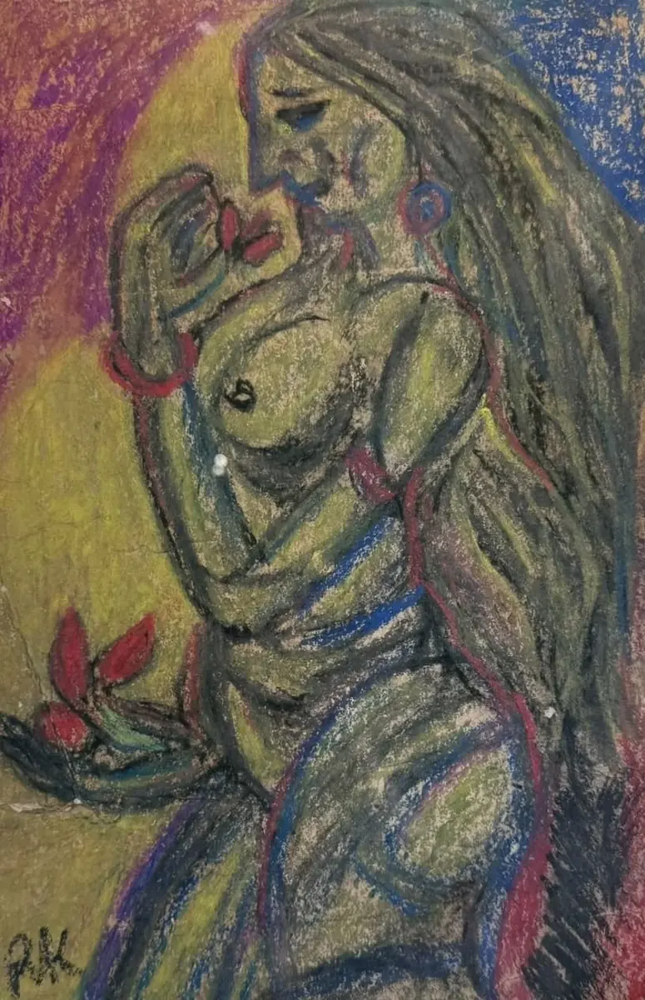
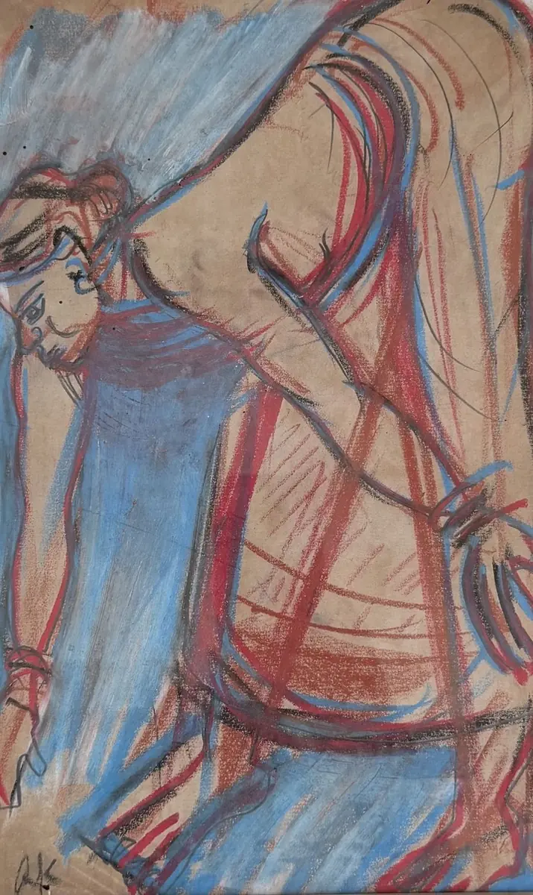
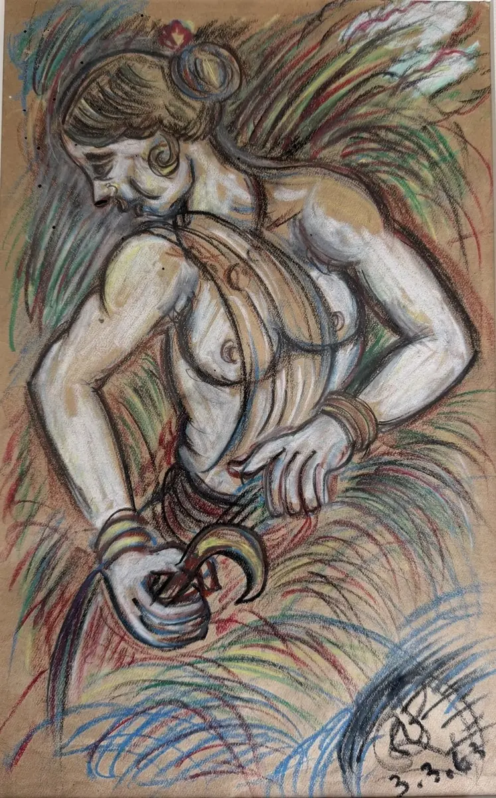

The place · Birbhum, West Bengal
Santiniketan
শান্তিনিকেতনSantiniketan: the abode of peace
A campus of red earth, sal groves and open-air classrooms, where painting, sculpture, music and festival were never kept apart. Most of what this house is about began here.
The place
A school with no walls
Rabindranath's father, Debendranath Tagore, set up a small ashram here in 1863, on open land in the Birbhum countryside, about a hundred and sixty kilometres north of Calcutta.
His son brought children here in 1901 and taught them under the trees. Classes still meet outdoors. The soil is laterite, red and hard, and the artists took it as a material: Ramkinkar mixed it into his sculptures, and the colour of the earth runs through the paintings made here.
In 2023 UNESCO inscribed Santiniketan as a World Heritage Site, for the way its buildings, gardens and art grew out of one idea of how people should learn.
- 1863Debendranath Tagore's ashram
- 1901Rabindranath's school opens
- 1919Kala Bhavana begins
- 1921Visva-Bharati is founded
- 2023A World Heritage Site
The murals
Painted on the walls people lived beside
Nandalal brought the lesson of Ajanta home: a painting on a wall belongs to everyone who walks past it. So teachers and students painted the campus itself.
The sculptures
Ramkinkar's open-air gallery
Ramkinkar Baij made his sculptures from cement and the red laterite at his feet, at the scale of real people, and left them out under the sky.
They have stood through decades of monsoon. Walking between them is still the best way to understand what Santiniketan meant by art for everyone.
The sculptures stay where he made them. Here are three of his works on paper that live in the house.

Woman with a Flower
Dry pastel on paper · In the house

Drawing Water
Dry pastel on paper · In the house

Harvest, 1963
Mixed media on paper · In the house
Alpana
Patterns drawn by hand on the floor
আলপনাAlpana, as it is written in Bangla
In Bengali homes, women paint alpana in rice paste on the floor for festivals and vows: lotuses, creepers, footprints of the goddess, the sun.
Abanindranath wrote about these vow paintings as a living art. At Santiniketan they became part of the curriculum and of every festival, drawn fresh each time on the red earth.
The patterns you see across this website are our own drawings, made in the spirit of alpana, kantha and the terracotta temples of Bishnupur. They are not copies of any artist's work.
The year at Santiniketan
A calendar of festivals
Rabindranath gave the campus festivals for the seasons. Each one is also an art event: alpana on the ground, painted backdrops, music and dance.
Santiniketan in Delhi
A little of that red earth, in South Delhi
Come and see the works that grew out of this place, or write to us if you know Santiniketan and its stories. We are always listening.